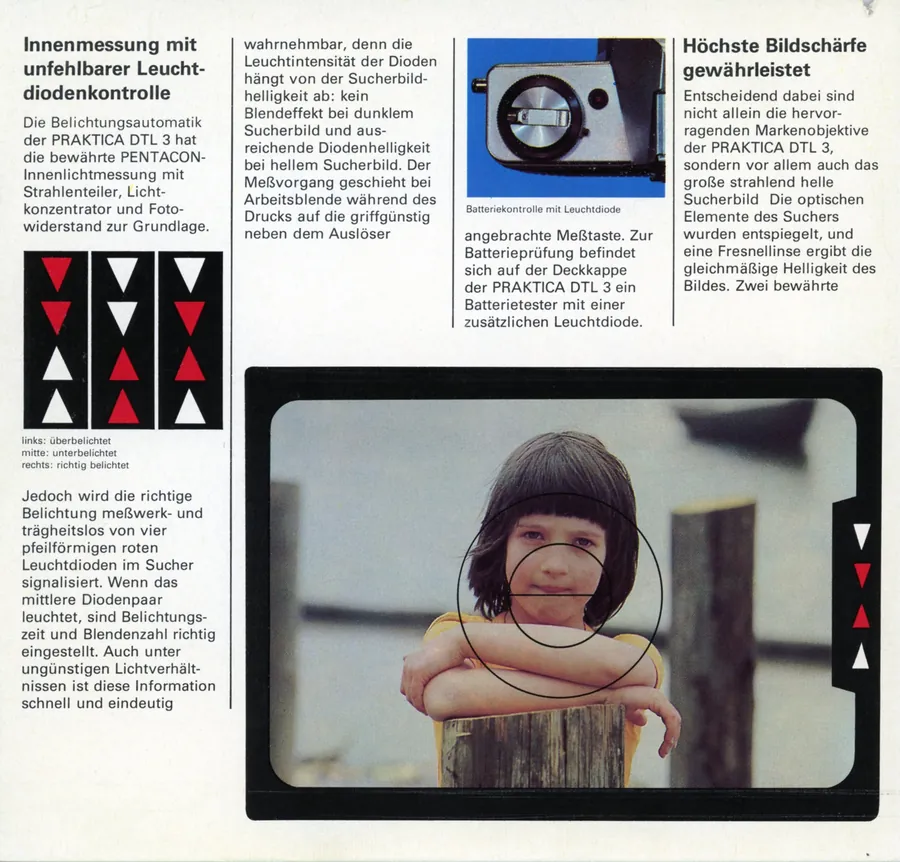
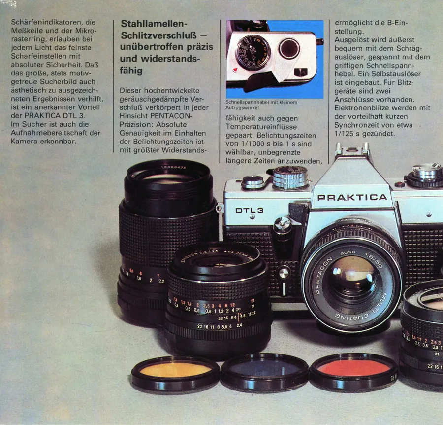
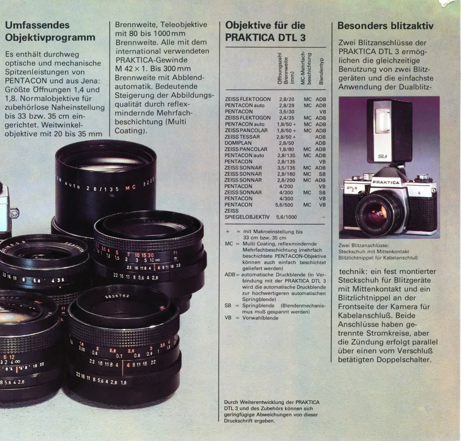
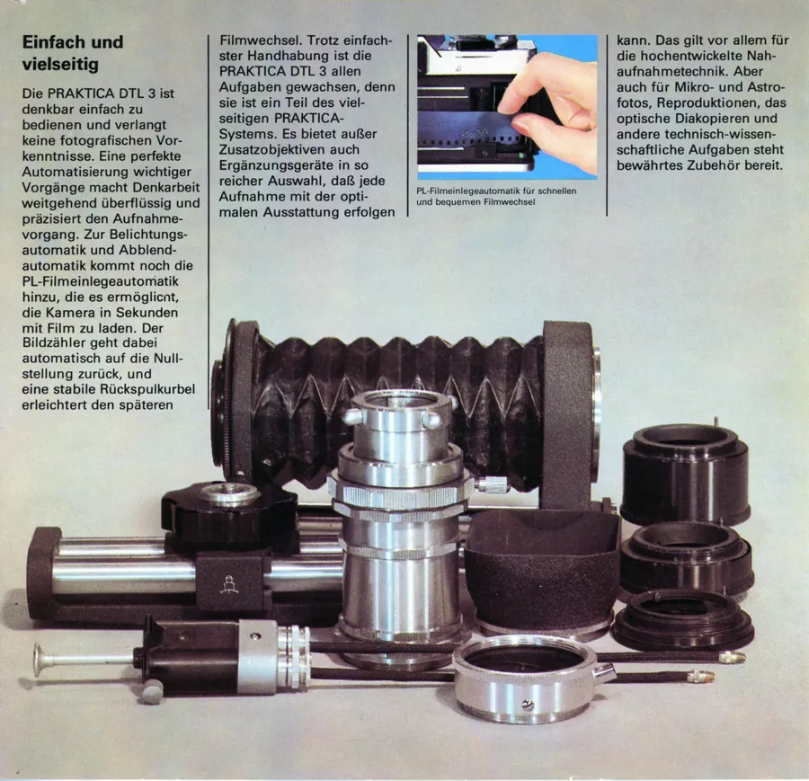
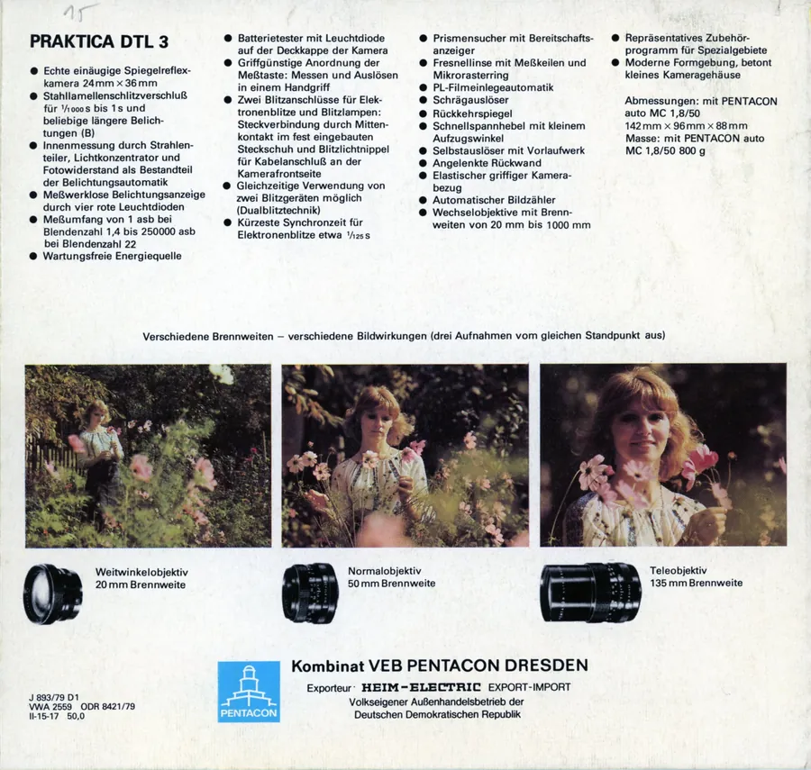

Przejdź do treści
Zenbliski
Menu
Archiwalne
Analogowe
Kolekcja
Akcesoria foto
Materiały reklamowe
Artykuły – blog
Foto ciekawostki
Cyfrowe
Materiały reklamowe
Foldery i prospekty
Praktica DTL 3, 1979 r., niemiecki





Poprzednia
ORWOfoto catalogus 76/77, 1977 r., niderlandzki
Następna
Praktica EE3, 1979 r., polski